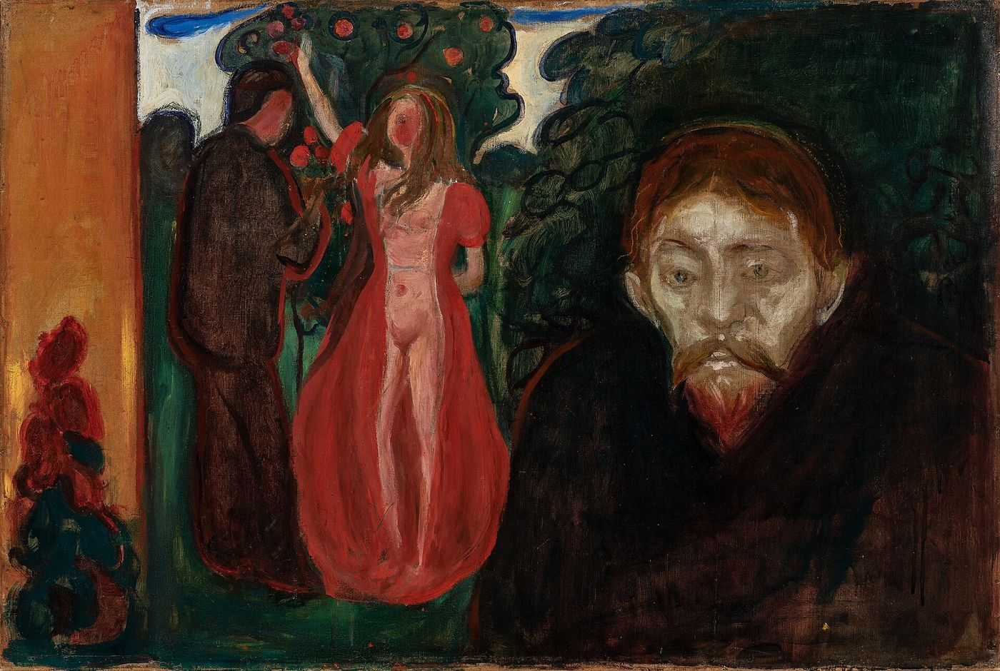
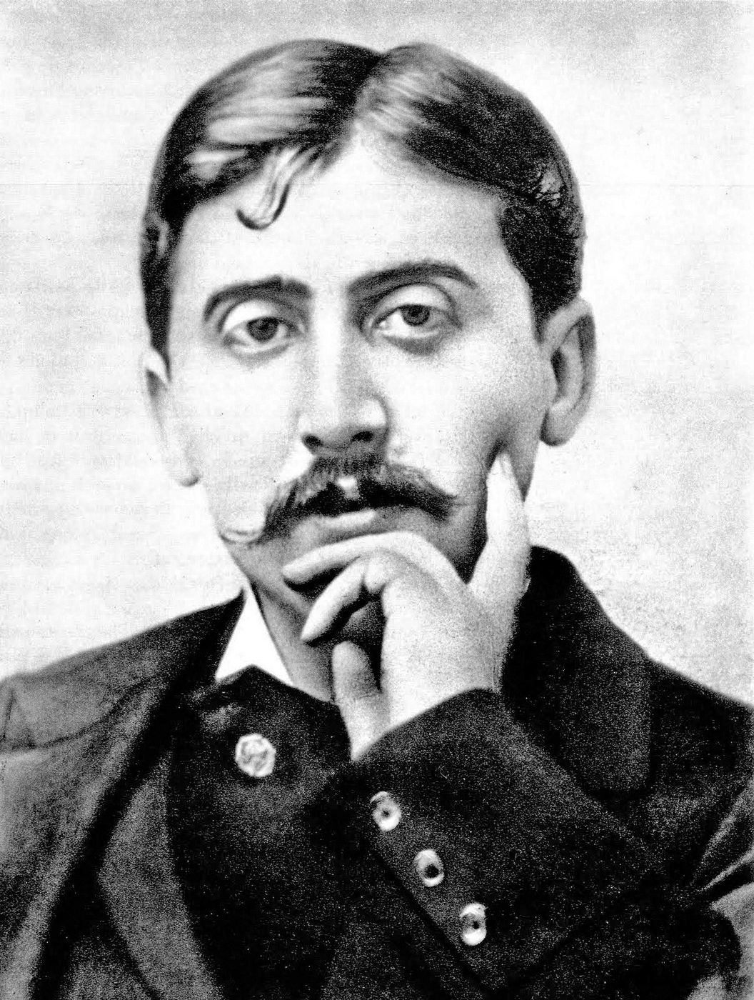

Cet essai a d’abord paru en turc. La version française est de ma main.


Vidi ego et expertus sum zelantem parvulum.
Augustin, Confessiones I, 7, 11
Trifles light as air / Are to the jealous confirmations strong / As proofs of holy writ.
Shakespeare, Othello III, 3
I
Au premier livre des Confessions, rédigées dans les dernières années du quatrième siècle, Augustin dit ne pas pouvoir se souvenir de sa propre petite enfance et ne pouvoir la deviner qu’en observant d’autres nourrissons ; et il glisse dans cette conjecture l’une des observations les plus brèves et les plus troublantes jamais écrites sur la nature humaine : « J’ai vu et observé un petit enfant jaloux : il ne parlait pas encore, et il regardait, pâle, d’un regard amer, son frère de lait. » Augustin rapporte cette observation pour ébranler la croyance commune en l’innocence des nourrissons, et en tire dans le même paragraphe sa conclusion célèbre : ce qui est innocent chez les petits enfants, c’est la faiblesse de leurs membres, non leur âme.1

Lacan revient au moins deux fois sur cette scène : dans le long texte sur les complexes familiaux rédigé en 1938 pour l’Encyclopédie française, puis dix ans plus tard dans sa conférence de Bruxelles sur l’agressivité.2 Lacan se sépare d’Augustin en ce qu’il voit dans la scène non un péché, mais une structure. L’enfant ne connaît pas encore un seul mot ; mais à sa propre place, au sein de sa mère, il voit un autre qui lui ressemble. Lacan nomme cette expérience le complexe de l’intrusion : le frère est l’étranger qui vient s’installer au beau milieu de mon image. Que la jalousie précède le langage montre qu’elle n’est pas un jugement réfléchi, mais qu’elle naît sur une scène d’images, dans l’ordre imaginaire de la relation spéculaire. Le rival est celui que je veux être ; la pâleur du nourrisson qui fixe son frère de lait est la pâleur de qui voit sa propre place occupée par un autre.
Trente-cinq ans plus tard, en 1973, dans le séminaire Encore, Lacan revient une fois encore au nourrisson d’Augustin et forge cette fois pour la scène un mot nouveau : jalouissance. Le mot fond ensemble jalousie et jouissance, terme par lequel Lacan désigne une satisfaction au-delà du plaisir.3 Ce que Lacan dit par ce mot, c’est que la jalousie n’est pas seulement la peur de perdre un objet, le sein, l’attention de la mère. Le nourrisson qui fixe son frère de lait ne regarde pas le lait que l’autre reçoit, mais la jouissance que l’autre éprouve, une jouissance qui lui est fermée et dont il est exclu. Ce qui est jalousé, c’est moins une chose que l’autre possède qu’une scène où l’autre jouit, dont je suis témoin et où je ne puis entrer. L’image la plus insupportable dans l’esprit du jaloux est celle de la jouissance que l’aimé partage avec un autre ; et cette image, qu’il y ait eu ou non trahison réelle, peut devenir une source de jouissance qui s’alimente elle-même.
Cette scène donne aussi la géométrie fondamentale de la jalousie. La jalousie se joue toujours à trois : moi, celui ou celle que j’aime, et celui qui s’interpose. Mais le sommet le plus obscur du triangle n’est souvent pas le rival lui-même, c’est ma propre image projetée à sa place ; et au sommet opposé se tient le désir de l’aimé, une inconnue qui ne s’ouvre jamais tout à fait à moi. Le reste de cet essai tentera de suivre la tension entre ces deux sommets.
Les mots portent eux aussi les deux visages de ce sentiment. Le latin zelare qu’emploie Augustin vient du grec zēlos, qui désigne à la fois la jalousie et la passion d’imiter autrui, le zèle, l’ardeur ; celui que l’on jalouse est aussi celui que l’on prend pour modèle. Le turc connaît un autre sens, ancien et toujours vivant, du verbe « être jaloux », kıskanmak : refuser, épargner quelque chose à quelqu’un, le lui plaindre. On dit en turc, avec ce même verbe, qu’« il n’a pas jalousé sa peine » pour dire qu’il l’a donnée sans compter ; le français garde une trace voisine dans l’idée de « garder jalousement ». Le jaloux est celui qui retient ce qu’il a, ou croit avoir, et ne veut le partager avec personne. Ces deux origines résument les deux visages de la jalousie : d’un côté, le désir de prendre la place d’un autre, d’être lui ; de l’autre, la peur de céder à quiconque sa propre place, son propre aimé, sa propre part.
II
Freud a exposé ses réflexions les plus suivies sur la jalousie en 1922, dans un article bref mais dense, Sur quelques mécanismes névrotiques dans la jalousie, la paranoïa et l’homosexualité, où il distingue trois couches de jalousie.4 La première est la jalousie que Freud appelle concurrentielle ou normale. Il ajoute aussitôt que même cette jalousie est loin d’être rationnelle, et l’analyse comme un composé de plusieurs sentiments : le deuil lié à la pensée de perdre l’objet aimé, la douleur d’une blessure narcissique, l’hostilité envers le rival heureux, et une autocritique qui se tient pour responsable de la perte. Pour Freud, les racines de cette jalousie plongent dans les premières relations amoureuses de l’enfance, dans le triangle œdipien et la rivalité entre frères et sœurs ; la jalousie adulte rejoue avec de nouveaux acteurs une scène bien plus ancienne. L’une des observations les plus fines de l’article est que cette jalousie peut être vécue de manière bisexuelle : un homme jaloux, tout en pleurant la femme qu’il aime et en haïssant son rival masculin, peut en même temps, inconsciemment, pleurer l’homme qu’il aime et voir la femme comme une rivale.
La deuxième couche est la jalousie projetée. Freud observe que la jalousie que certains éprouvent envers leur partenaire trouve sa source dans leur propre infidélité effective ou dans des impulsions infidèles refoulées. La personne attribue à l’autre le désir qu’elle porte en elle et ne peut admettre ; la pensée « elle veut me tromper » allège le poids de la pensée « je désire quelqu’un d’autre ». Freud note aussi que la tolérance sociale envers les petites infidélités, le flirt par exemple, sert de soupape de sûreté à ces impulsions. Bien qu’elle puisse prendre une allure presque délirante, la jalousie projetée est accessible au travail analytique ; car la personne peut changer l’adresse de sa jalousie dans la mesure où elle supporte que ses fantasmes inconscients soient ramenés à la surface.
La troisième couche est la jalousie délirante : une certitude qu’aucune preuve ne peut ébranler, où chaque détail devient le signe d’une trahison. Freud rattache ce tableau à la grammaire de la paranoïa qu’il a exposée dans l’étude sur Schreber en 1911. Dans cette grammaire, un désir homosexuel refoulé est transformé par les différentes manières de nier la phrase « je l’aime », et dans le délire de jalousie la phrase prend cette forme : ce n’est pas moi qui l’aime, c’est elle qui l’aime.5 La place que Freud donne à l’homosexualité dans cette explication est aujourd’hui discutée à juste titre. Mais le noyau logique de l’explication, le sujet qui vit son propre désir comme le désir de l’autre, reste valable dans toutes les couches de la jalousie.
La psychiatrie a plus tard donné au tableau que Freud appelait jalousie délirante un nom littéraire. Dans un article de 1955, les psychiatres anglais John Todd et Kenneth Dewhurst décrivirent des patients dont la certitude de l’infidélité de leur partenaire n’était ébranlée par aucune preuve, et nommèrent ce tableau « syndrome d’Othello ».6 Ce que ces patients ont en commun, c’est que leur jalousie est vécue non comme un soupçon, mais comme un savoir : chaque geste du partenaire, chaque retard, chaque silence est une preuve nouvelle d’une trahison déjà connue. Ce sont des tableaux cliniques graves, qui demandent souvent une évaluation psychiatrique ; de toutes les formes de jalousie, le délire de jalousie est la plus proche de la violence.
III
Bien avant Freud, Spinoza avait défini la jalousie, dans la troisième partie de l’Éthique, comme une fluctuation de l’âme où l’amour et la haine envers la chose aimée se mêlent, nourrie par l’envie envers un tiers.7 Dans le scolie de la même proposition, Spinoza rattache la douleur de l’homme jaloux à une image, avec une franchise surprenante : celui qui imagine la femme qu’il aime avec un autre souffre non seulement parce que son propre désir est contrarié, mais parce qu’il est contraint de joindre l’image de la chose aimée au corps d’un autre.8 Au centre de la jalousie se tient, une fois encore, une image : celle de la jouissance de l’autre. Deux aspects de cette définition retiennent l’attention : la jalousie n’est pas un sentiment unique, mais une oscillation ; et elle contient une autre passion qu’il faut en distinguer, l’envie.
Le français, comme le turc, dispose de deux mots distincts pour ces deux sentiments, et c’est Melanie Klein qui a tracé leur distinction psychanalytique avec le plus de netteté. Dans Envie et gratitude (1957), Klein définit l’envie comme une relation à deux : l’envieux veut la bonne chose que l’autre possède et, s’il ne peut l’obtenir, veut la gâter, la dévaloriser. La jalousie, elle, se joue à trois : le jaloux craint de perdre au profit d’un rival une chose qu’il aime et qu’il croit lui appartenir. L’envie tend à détruire le bon, la jalousie cherche à le protéger ; pour Klein, l’envie est le sentiment le plus primitif et le plus destructeur, tandis que la jalousie suppose au moins l’existence d’une relation d’amour.9 La distinction est décisive en clinique, car beaucoup de ce qui est vécu comme jalousie dans les couples est en réalité de l’envie. Celui qui ne supporte pas la réussite, le bonheur de son partenaire, ni qu’il ait une vie indépendante de lui, craint peut-être moins de le perdre que ce qu’il possède.
Freud pensait que la jalousie et l’envie avaient aussi une place dans le lien social lui-même. Dans son livre de 1921 sur la psychologie des masses, il observe des enfants dans une nursery : d’abord jaloux les uns des autres, chacun veut l’amour des adultes pour lui seul. Mais lorsque aucun ne peut être privilégié, la jalousie se change en revendication : que personne ne soit privilégié, que tous soient traités également. Pour Freud, l’esprit de corps, le sentiment de justice, l’exigence d’égalité sont une transformation de cette jalousie première : nous renonçons nous-mêmes à bien des choses pour que les autres soient obligés d’y renoncer aussi.10 La phrase semble d’abord une attaque cynique contre la justice ; mais Freud veut montrer que la jalousie n’est pas seulement destructrice et que, transformée, elle peut entrer dans le ciment du lien social. Ce qui rend la vie commune possible, ce n’est pas que la jalousie disparaisse, mais qu’elle change de forme, qu’elle soit liée à une loi, à une règle de partage.
Le fondateur de la psychanalyse n’était pas exempt de ce sentiment. Freud avait vingt-six ans lorsqu’il se fiança à Martha Bernays en 1882 ; les fiançailles durèrent quatre ans, passés pour l’essentiel en lettres, Martha à Wandsbek près de Hambourg, Freud à Vienne. Ces lettres, longuement citées dans la biographie d’Ernest Jones, montrent clairement la jalousie intense que Freud éprouvait envers les hommes de la vie de sa fiancée, notamment un ancien admirateur, le peintre Fritz Wahle, et son cousin Max Mayer. Freud demandait à Martha de ne pas voir ces hommes, et jalousait jusqu’à son attachement à sa famille, en particulier à sa mère et à son frère.11 Quarante ans plus tard, en écrivant dans son article que même la forme « normale » de la jalousie est loin d’être rationnelle, Freud devait se souvenir de ces lettres de jeunesse.
Depuis une trentaine d’années, l’explication psychanalytique de la jalousie dialogue aussi avec un autre cadre théorique, la psychologie évolutionniste. Une étude très discutée, publiée en 1992 par David Buss et ses collègues, concluait que les hommes réagissent par une jalousie plus intense à l’infidélité sexuelle de leur partenaire, et les femmes à l’infidélité affective, et rattachait cette différence aux risques reproductifs distincts auxquels les ancêtres des deux sexes étaient exposés.12 Cette explication offre un cadre pour comprendre pourquoi la jalousie est si universelle et si puissante. Mais le regard psychanalytique pose une autre question : pourquoi, dans la même situation, l’un devient-il fou de jalousie quand l’autre reste calme ? Pourquoi quelqu’un qui n’a jamais été trahi brûle-t-il de la même jalousie dans chaque relation ? La question de la forme que prend une tendance universelle dans l’histoire d’un sujet ne peut trouver réponse que dans la parole de ce sujet.
IV
L’étude de la jalousie la plus profonde de la littérature est peut-être « Un amour de Swann », dans le premier volume d’À la recherche du temps perdu de Marcel Proust. Élégant, riche, reçu dans les salons les plus fermés de la société parisienne, Charles Swann s’attache peu à peu à Odette, qui d’abord ne lui plaît guère. Le moment où son amour cristallise est le soir où Odette n’est pas chez les Verdurin et où Swann la cherche éperdument, à minuit, dans les restaurants des boulevards. Dès lors, l’amour et la jalousie de Swann ne se distinguent plus : pour savoir où se trouve Odette et qui elle voit, il attend devant sa maison, guette les fenêtres, et tente un jour de lire, à travers l’enveloppe tenue devant la lumière, une lettre qu’Odette a écrite à un autre homme.


L’intuition de Proust, c’est que la jalousie est une passion de savoir. Le jaloux veut savoir ; mais aucun savoir ne lui suffit, chaque réponse fait naître une question nouvelle, et ce qu’il cherche n’est pas vraiment un savoir, mais une certitude qui ne viendra pas. Plus frappant encore, chez Proust, la jalousie n’est pas la conséquence de l’amour, mais le moteur qui le nourrit : l’amour de Swann grandit à mesure qu’Odette semble lui échapper. Le récit se clôt sur la phrase célèbre que Swann se dit à lui-même une fois l’amour fini : « Dire que j’ai gâché des années de ma vie, que j’ai voulu mourir, que j’ai eu mon plus grand amour, pour une femme qui ne me plaisait pas, qui n’était pas mon genre ! »13
Plus de soixante ans plus tard, dans l’entrée « Jalousie » des Fragments d’un discours amoureux, Roland Barthes décrit de l’intérieur cette expérience par un décompte inoubliable : « Comme jaloux, je souffre quatre fois ». Les quatre souffrances que compte Barthes sont celles d’être jaloux, de se reprocher de l’être, de craindre que sa jalousie ne blesse l’autre, et enfin de se soumettre à un sentiment si banal.14 La blessure la moins remarquée de la jalousie est peut-être la dernière : on a honte aussi que sa douleur soit si commune, si ordinaire.
Proust revient à la jalousie dans les volumes suivants de son roman, avec la passion du narrateur pour Albertine, et la porte en un point bien plus sombre que l’histoire de Swann. Dans La Prisonnière, le narrateur, craignant qu’Albertine ne lui échappe et ne voie d’autres femmes, l’enferme de fait chez lui ; mais la jalousie ne s’apaise pas lorsque le corps de l’aimée est placé sous contrôle. Au contraire, elle s’étend à chaque pensée, chaque regard, chaque instant passé que le contrôle ne peut atteindre. Même après la mort d’Albertine, le narrateur poursuit son enquête sur son passé et charge quelqu’un de recueillir des informations sur elle.15 Que la jalousie survive même à l’aimée montre que son véritable objet n’est pas une personne, mais la région du désir de cette personne qui nous reste fermée. La mort ne referme pas cette région ; elle la rend à jamais inaccessible.
La littérature russe pousse ce visage sombre de la jalousie à son extrême dans La Sonate à Kreutzer de Tolstoï, écrite en 1889. Au cours d’un voyage en train, toute une nuit, un homme nommé Pozdnychev raconte à un compagnon de route comment il a tué sa femme. Celle-ci avait joué au piano la Sonate à Kreutzer de Beethoven avec un violoniste venu chez eux ; pour Pozdnychev, cette musique a créé entre eux deux une intimité, une jouissance dont il était exclu. La jalousie grandit parmi une trahison sans preuve et les images qu’éveille une musique, et finit en meurtre.16 Ce qui rend Pozdnychev fou n’est pas un acte, mais une scène : une jouissance que sa femme partage avec un autre et où il ne peut entrer. C’est l’un des exemples les plus effrayants, en littérature, de ce que Lacan appelle jalouissance.
V
Dans l’Othello de Shakespeare, la jalousie est mise en scène comme l’effacement de la différence entre preuve et signe. En mettant Othello en garde contre la jalousie, Iago l’y précipite, la comparant au monstre aux yeux verts qui se moque de la chair dont il se nourrit. Puis il prononce les vers placés en exergue : des riens légers comme l’air sont, pour le jaloux, des confirmations aussi fortes que les preuves de l’Écriture sainte. Ce qui convainc Othello, c’est un petit mouchoir qu’a laissé tomber Desdémone. L’un des détails les moins remarqués de la pièce est que Iago lui-même est jaloux. Dans son monologue à la fin du premier acte, Iago dit qu’il hait Othello, qu’on raconte dehors qu’Othello a rempli son office entre ses draps, qu’il ne sait pas si c’est vrai, mais que sur un simple soupçon de cette sorte il agira comme si c’était certain.17 L’homme qui précipite Othello dans la jalousie est celui qui lui transmet sa propre jalousie. La jalousie circule dans la pièce comme une contagion : le soupçon de Iago devient la certitude d’Othello. Que la jalousie n’ait même pas besoin d’un instigateur extérieur, Shakespeare le montre des années plus tard dans Le Conte d’hiver. Léonte, roi de Sicile, au moment où il voit sa femme Hermione convaincre son ami d’enfance Polixène, roi de Bohême, de prolonger son séjour, est soudain saisi de jalousie sans qu’aucun Iago lui ait rien soufflé ; il trouve que la main de sa femme s’attarde un peu trop dans celle de leur hôte et croit voir une trahison certaine.18 Dans Othello, la jalousie a une source, un instigateur, un mouchoir ; dans Le Conte d’hiver, seulement un regard, une main, un instant. La jalousie ne vient pas du dehors ; elle donne un visage, à la première occasion extérieure, à une question, un soupçon, une peur qui attendaient déjà au-dedans.
La jalousie se nourrit toujours de ces petits objets : un mouchoir, une lettre, un nom qui apparaît sur l’écran d’un téléphone, un retard, un sourire. La vie numérique a multiplié ces objets comme jamais : l’heure de « dernière connexion », un « j’aime » laissé sous une photo, un nom ajouté à une liste d’abonnements sont les équivalents actuels du mouchoir d’Othello ; et tous sont aussi légers que ce que Iago dit léger comme l’air, et aussi lourds que ce qu’il appelle les preuves de l’Écriture. Ces objets ne sont pas des preuves, mais des signes ; or, pour le sujet jaloux, un signe est toujours une preuve. Là réside le paradoxe épistémologique de la jalousie : aucune preuve ne suffit à l’apaiser, mais le moindre signe suffit à la confirmer. Du point de vue lacanien, la source du paradoxe est que la vraie question du sujet jaloux ne porte jamais sur des faits. La jalousie est une réponse donnée à la vieille question posée devant le désir du grand Autre : « Que suis-je pour lui, pour elle ? » Quand cette question reste sans réponse, l’angoisse monte, et le sujet jaloux, plutôt que de supporter cette angoisse, la convertit en certitude : il y a un rival, il y a trahison, j’ai été laissé dehors. La jalousie donne un visage à l’incertitude. La tragédie d’Othello tient moins à l’innocence de Desdémone qu’à son besoin de ce visage.
VI
Une croyance encore répandue tient la jalousie pour une preuve d’amour : s’il est jaloux, c’est qu’il aime. Cette croyance n’est pas innocente ; elle prépare le terrain pour que la jalousie devienne la justification du contrôle, de la surveillance et de la violence. Vérifier un téléphone, se mêler des vêtements, restreindre les amitiés, demander sans cesse où l’on est allé sont des signes non d’amour, mais de contrôle. Du point de vue psychanalytique aussi, la jalousie dit quelque chose non de l’aimé, mais de l’angoisse propre de celui qui aime : celui qui surveille sans cesse son partenaire ne cherche pas à savoir ce que l’autre désire, mais à obtenir une garantie de sa propre place ; et aucune surveillance ne peut fournir cette garantie. Lorsque la jalousie tourne à la menace, à l’intimidation ou à la violence, elle cesse d’être un problème de couple et devient un problème de sécurité. Le débat public sur cette question a gagné aussi la langue du droit. En Turquie, par exemple, la disposition du Code pénal relative à la provocation injuste a longtemps été discutée dans les affaires de violences contre les femmes où l’accusé invoquait la jalousie ou la « défense de son honneur » ; les défenseurs des droits des femmes soulignent que présenter la jalousie comme une circonstance atténuante nourrit une culture qui légitime ces violences. La France a connu un débat comparable autour de la figure du « crime passionnel ».19 Le regard psychanalytique prend dans ce débat une position claire : la jalousie, en tant que sentiment, mérite d’être comprise, parlée et élaborée ; mais elle ne peut jamais justifier un acte contre le corps, la liberté ou la vie d’autrui. Dans une telle situation, les premiers pas sont d’appeler le 17 ou le 112, ou, en France, le 3919, le numéro national d’écoute pour les femmes victimes de violences.
VII
En clinique, la jalousie arrive souvent accompagnée de honte : tantôt sur l’insistance d’un partenaire, tantôt au moment où une relation atteint un seuil, tantôt le jour où un fardeau porté depuis des années ne peut plus l’être. La personne sait que sa jalousie est disproportionnée, voudrait s’en défaire, mais ne peut s’arrêter. Le travail analytique ne cherche ni à réprimer la jalousie ni à contraindre la personne à se conduire « raisonnablement » ; il demande plutôt quelle scène ancienne la jalousie rejoue, qui la personne voit dans le rival, de qui est le désir qu’elle prête à son partenaire. Le nourrisson qui fixe son frère de lait, la jalousie projetée de Freud, l’envie de Klein et l’enquête sans fin de Swann sont autant de visages de ces questions.
La jalousie apparaît aussi dans l’analyse elle-même, et elle y a une valeur particulière. Un autre analysant croisé dans la salle d’attente, un message arrivant sur le téléphone de l’analyste, une séance reportée à cause de quelqu’un d’autre, la question de savoir avec qui l’analyste part en vacances : ces petits événements peuvent installer chez l’analysant une scène où l’analyste en préfère un autre et le laisse dehors. Ces sentiments peuvent embarrasser l’analysant ; mais ils sont précieux pour le travail analytique. Car la jalousie surgit ici en un lieu où il n’y a eu aucune trahison réelle et où le cadre de la relation à l’analyste est clair ; elle offre ainsi, pour la première fois, la possibilité d’examiner de l’extérieur, en parlant, la vieille scène que le sujet apporte de sa propre histoire, celle de l’enfant qui fixe son frère de lait.
Le trait le plus marqué du sujet jaloux est sa certitude quant à ce que l’autre désire. Le travail analytique tente de desserrer cette certitude et d’ouvrir à sa place une question. Passer de la surveillance à la parole, de la recherche de preuves à l’écoute de sa propre angoisse : voilà ce qui rompt la chaîne de la jalousie ; car le véritable objet de la jalousie n’est pas la vie secrète de l’aimé, mais l’insupportable incertitude quant à la place du sujet dans cette vie. Cette incertitude ne disparaît jamais tout à fait ; aimer, c’est accepter de vivre avec le désir d’un autre, qui ne s’ouvrira jamais entièrement à nous. Se délivrer de la jalousie, c’est pouvoir vivre avec cette incertitude, au lieu de la combler par une certitude.
Notes
- Augustin, Confessiones I, 7, 11 : « Vidi ego et expertus sum zelantem parvulum: nondum loquebatur et intuebatur pallidus amaro aspectu conlactaneum suum. » Dans le même chapitre : « Ita imbecillitas membrorum infantilium innocens est, non animus infantium. » Je traduis. Lacan cite volontiers ce passage dans le latin. ↩︎
- J. Lacan, « Les complexes familiaux dans la formation de l’individu » (1938), Autres écrits (2001) ; « L’agressivité en psychanalyse » (1948), Écrits (1966), p. 101–124. ↩︎
- J. Lacan, Le Séminaire, Livre XX : Encore (1972–1973), Paris, Seuil, 1975. Évoquant la scène d’Augustin, Lacan souligne que la jalousie naît d’une jouissance que le nourrisson voit chez son frère de lait et dont il est lui-même exclu. ↩︎
- S. Freud, « Sur quelques mécanismes névrotiques dans la jalousie, la paranoïa et l’homosexualité » (1922). Les textes de Freud sont cités sous leurs titres français usuels, avec l’année de première publication. ↩︎
- S. Freud, « Remarques psychanalytiques sur l’autobiographie d’un cas de paranoïa (Le Président Schreber) » (1911). ↩︎
- J. Todd et K. Dewhurst, « The Othello syndrome: a study in the psychopathology of sexual jealousy », Journal of Nervous and Mental Disease 122 (1955). Les auteurs ont aussi relevé l’association fréquente du tableau avec la dépendance à l’alcool et certaines maladies neurologiques. ↩︎
- B. de Spinoza, Ethica (1677), partie III, proposition 35 et scolie. ↩︎
- Spinoza, Ethica, III, 35, scolie. L’observation de Spinoza est étonnamment proche de la structure que Lacan nommera trois siècles plus tard du mot jalouissance : l’idée que l’image de la jouissance de l’autre se tient au centre de la jalousie. ↩︎
- M. Klein, Envy and Gratitude (1957) ; trad. fr. Envie et gratitude, Gallimard, 1968. ↩︎
- S. Freud, Psychologie des masses et analyse du moi (1921), chapitre IX. Freud y explique par le même mécanisme comment les admiratrices qui entourent un musicien après un concert, au lieu de se jalouser, s’unissent dans une admiration commune. ↩︎
- E. Jones, The Life and Work of Sigmund Freud, vol. 1, Londres, Hogarth Press, 1953, chapitres consacrés aux années de fiançailles. Jones qualifie la jalousie de Freud durant ces années de « presque obsessionnelle » et pense qu’elle a laissé des traces dans sa pensée théorique ultérieure. ↩︎
- D. M. Buss, R. J. Larsen, D. Westen et J. Semmelroth, « Sex differences in jealousy: Evolution, physiology, and psychology », Psychological Science 3/4 (1992). La généralité du résultat a été sérieusement mise en question par les recherches ultérieures, selon la méthode de mesure et le contexte culturel. ↩︎
- M. Proust, Du côté de chez Swann (1913), dernière phrase d’« Un amour de Swann ». ↩︎
- R. Barthes, Fragments d’un discours amoureux (1977), entrée « Jalousie ». ↩︎
- M. Proust, La Prisonnière (1923) et Albertine disparue (1925). ↩︎
- L. Tolstoï, Kreïtserova sonata (1889). La nouvelle fut arrêtée par la censure avant sa publication en Russie, ses vues sur la sexualité et le mariage étant jugées obscènes ; elle toucha pourtant un large public par des copies circulant de main en main, et put être imprimée en 1891 dans les œuvres complètes de Tolstoï avec l’autorisation du tsar Alexandre III. ↩︎
- Shakespeare, Othello, I, 3 : “I hate the Moor, / And it is thought abroad that ’twixt my sheets / He has done my office. I know not if’t be true, / But I, for mere suspicion in that kind, / Will do as if for surety.” ↩︎
- Shakespeare, The Winter’s Tale (v. 1610–1611), I, 2. La jalousie de Léonte n’est rattachée à aucune cause extérieure dans la pièce ; la critique lit cette scène comme le lieu où Shakespeare peint la jalousie comme une passion née tout entière de l’intérieur. ↩︎
- Code pénal turc n° 5237, article 29. La manière dont cette disposition a été appliquée dans les affaires de violences contre les femmes fait depuis longtemps débat dans la jurisprudence et dans l’opinion publique, et ce débat s’est reflété dans les évolutions législatives. ↩︎
Bibliographie
- Augustin. Confessiones, livre I.
- Barthes, R. (1977). Fragments d’un discours amoureux. Seuil.
- Buss, D. M., Larsen, R. J., Westen, D. et Semmelroth, J. (1992). Sex differences in jealousy: Evolution, physiology, and psychology. Psychological Science, 3(4).
- Freud, S. (1911). Remarques psychanalytiques sur l’autobiographie d’un cas de paranoïa (Le Président Schreber). Dans Cinq psychanalyses. PUF.
- Freud, S. (1921). Psychologie des masses et analyse du moi. Dans Essais de psychanalyse. Payot.
- Freud, S. (1922). Sur quelques mécanismes névrotiques dans la jalousie, la paranoïa et l’homosexualité. Dans Névrose, psychose et perversion. PUF.
- Jones, E. (1953). The Life and Work of Sigmund Freud (vol. 1). Hogarth Press.
- Klein, M. (1957). Envy and Gratitude. Tavistock. [Trad. fr. : Envie et gratitude. Gallimard, 1968.]
- Lacan, J. (1966). L’agressivité en psychanalyse (1948). Dans Écrits (p. 101–124). Seuil.
- Lacan, J. (1975). Le Séminaire, Livre XX : Encore (1972–1973). Seuil.
- Lacan, J. (2001). Les complexes familiaux dans la formation de l’individu (1938). Dans Autres écrits. Seuil.
- Proust, M. (1913). Du côté de chez Swann. Grasset.
- Proust, M. (1923). La Prisonnière. Gallimard.
- Proust, M. (1925). Albertine disparue. Gallimard.
- Shakespeare, W. (1603–1604). Othello.
- Shakespeare, W. (v. 1610–1611). The Winter’s Tale.
- Spinoza, B. de (1677). Ethica.
- Todd, J. et Dewhurst, K. (1955). The Othello syndrome: a study in the psychopathology of sexual jealousy. Journal of Nervous and Mental Disease, 122.
- Tolstoï, L. (1889). Kreïtserova sonata.